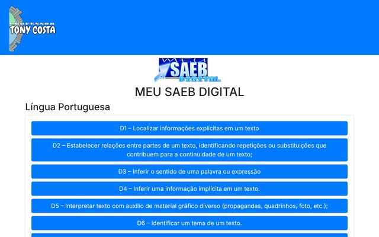
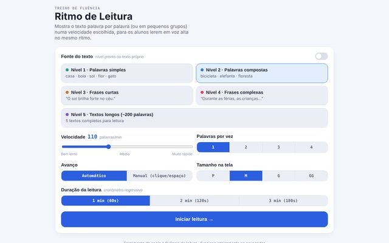
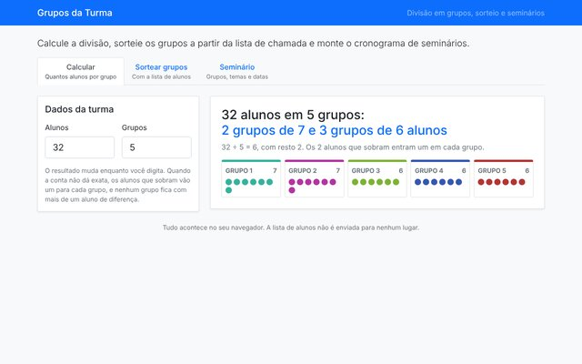
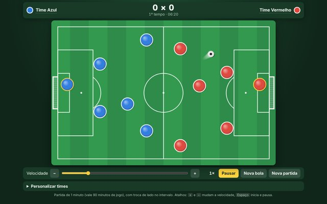
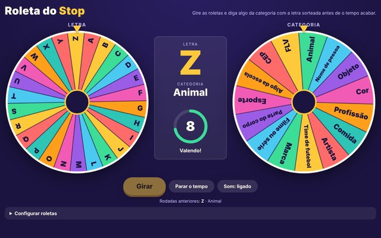
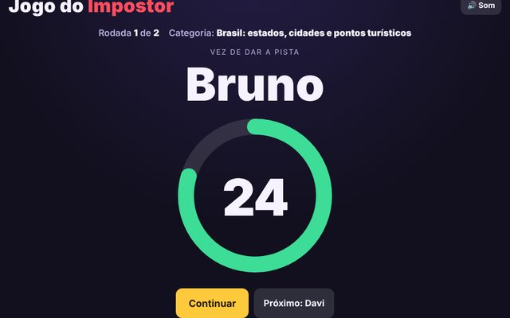
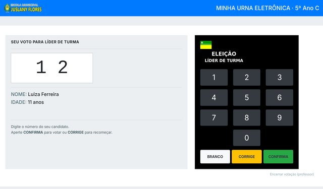

Avaliação
Meu SAEB Digital
Atividades por descritor do SAEB: 15 de Língua Portuguesa e 28 de Matemática, com 10 questões cada e correção na hora.
Msc., Esp. · Professor da Educação Básica · Boa Vista, Roraima
Docente das redes públicas do Estado de Roraima e do Município de Boa Vista, com mais de duas décadas de experiência na Educação Básica. Licenciado em Informática, Computação, Geografia, Pedagogia e História, especialista em Tecnologias em Educação e mestre em Ensino de Geografia (PROFGEO/UERR), com pesquisa sobre o uso de RPG no ensino. Aqui estão os aplicativos web que criei para as minhas turmas.
Todos funcionam no navegador do computador, da lousa digital ou do celular.

Atividades por descritor do SAEB: 15 de Língua Portuguesa e 28 de Matemática, com 10 questões cada e correção na hora.

Treino de fluência: o texto aparece aos poucos, na velocidade escolhida, para a turma ler em voz alta. Tem níveis de palavras, frases e textos.

Calcula quantos alunos ficam em cada grupo, sorteia os grupos a partir da lista de chamada e monta o cronograma de seminários.

Para os momentos livres da turma: cada time ganha nome, cores e escudo, e a partida acontece sozinha, de forma totalmente aleatória. São 90 minutos de jogo em 1 minuto, com intervalo e troca de lado.

Stop (adedonha) com duas roletas, uma de letras e outra de categorias. Ao girar, o estudante tem 10 segundos para dizer algo da categoria com a letra sorteada.

Todos recebem a mesma palavra, menos o impostor. Cada estudante dá uma pista na sua vez, com o tempo na tela, e a turma vota para descobrir quem é. Mais de 2.900 palavras em 26 categorias.
Plataforma online das turmas. Os alunos entram com usuário e senha ou criam a conta com o código da turma.

Eleição do líder de turma no estilo da urna de verdade, com voto em branco e nulo e boletim de urna. Cada professor organiza a eleição das suas turmas.
Online, com login do professor. O código está no GitHub.
Mais de duas décadas de docência na Educação Básica, nas redes estadual de Roraima e municipal de Boa Vista.
O uso de RPG no Ensino de Geografia de Roraima
Dúvidas, sugestões ou quer usar algum aplicativo na sua escola? Escreva para mim.